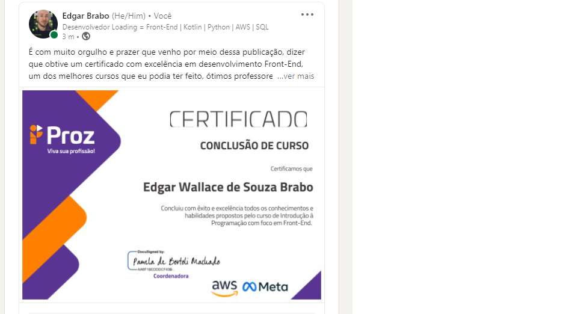

16 de maio de 2023
Ganhei um Voucher para certificação AWS

Após quase 5 meses de curso, participei de um projeto onde criamos uma loja virtual, onde ao final do evento tivemos um processo seletivo para ganhar um voucher para tirar a certificação AWS Practitioner, e claro eu ganhei, foi uma experiência muito boa nesses meses, aprendi muito e evolui também.